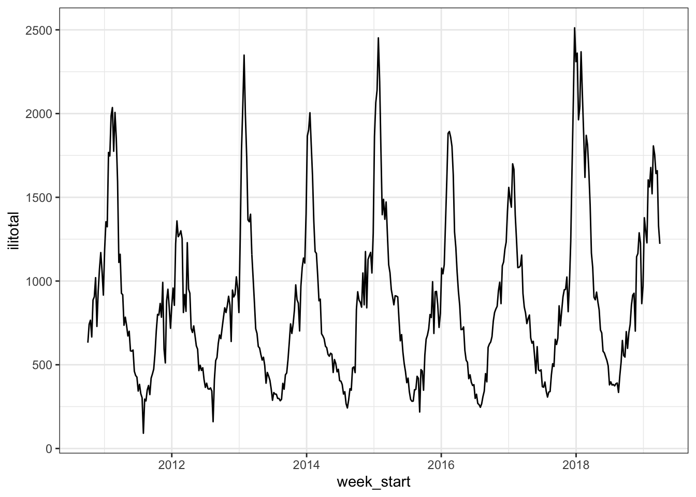
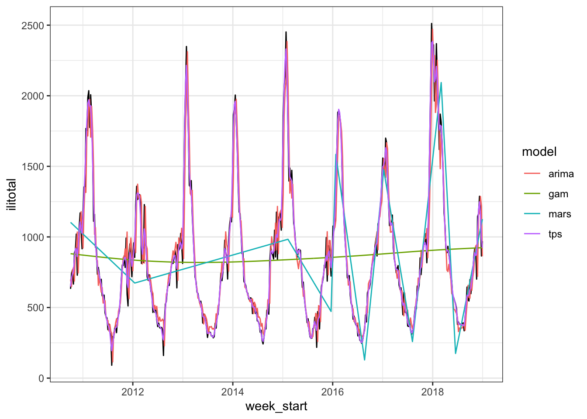
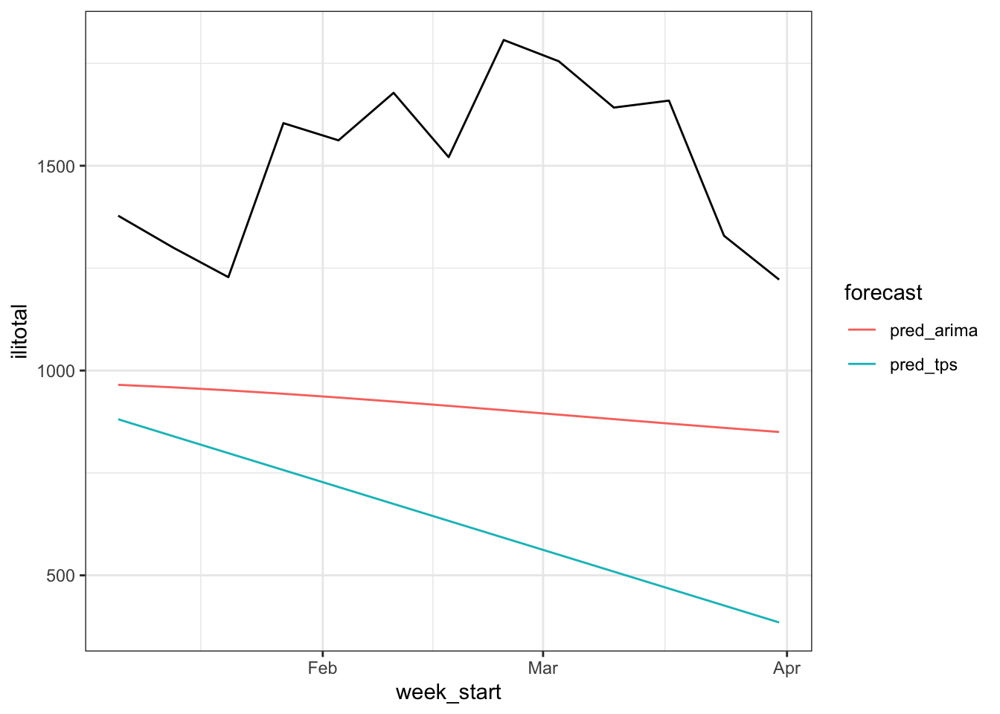
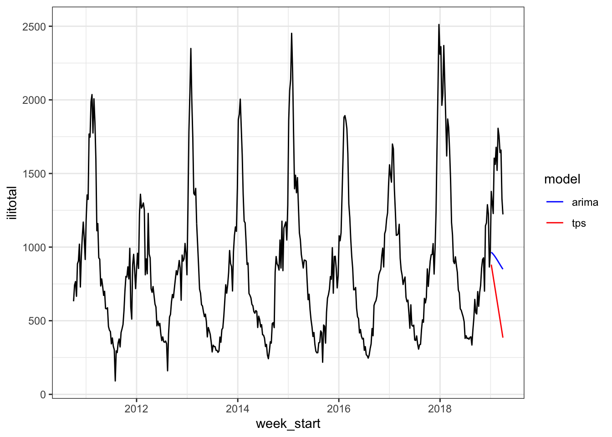
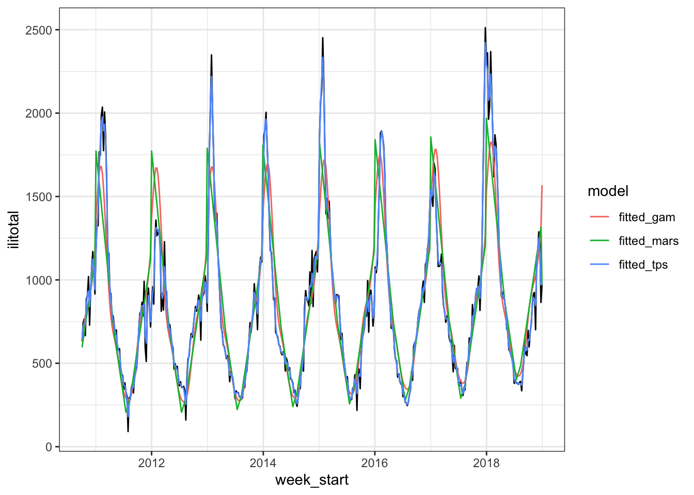
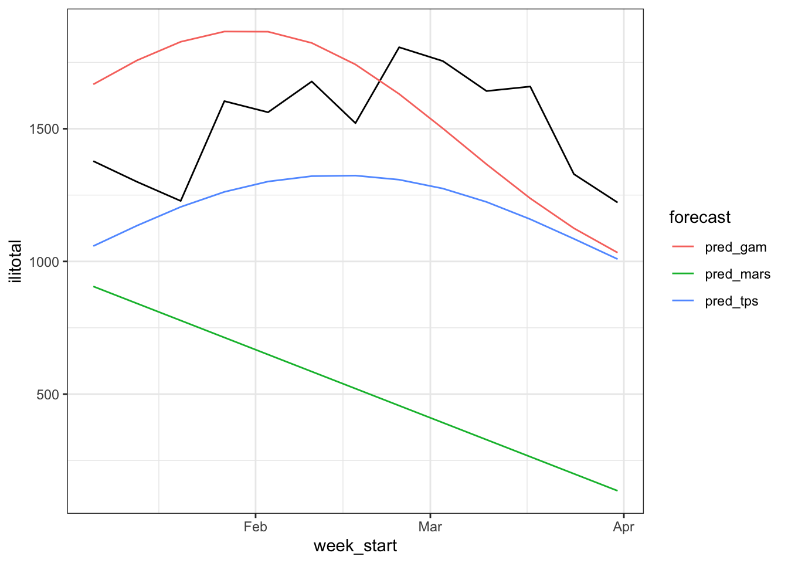
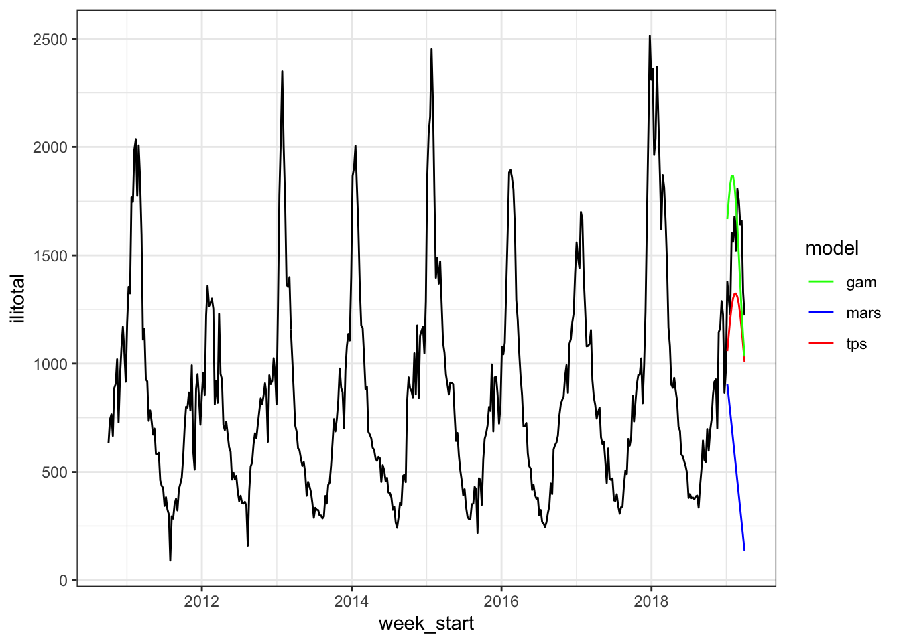
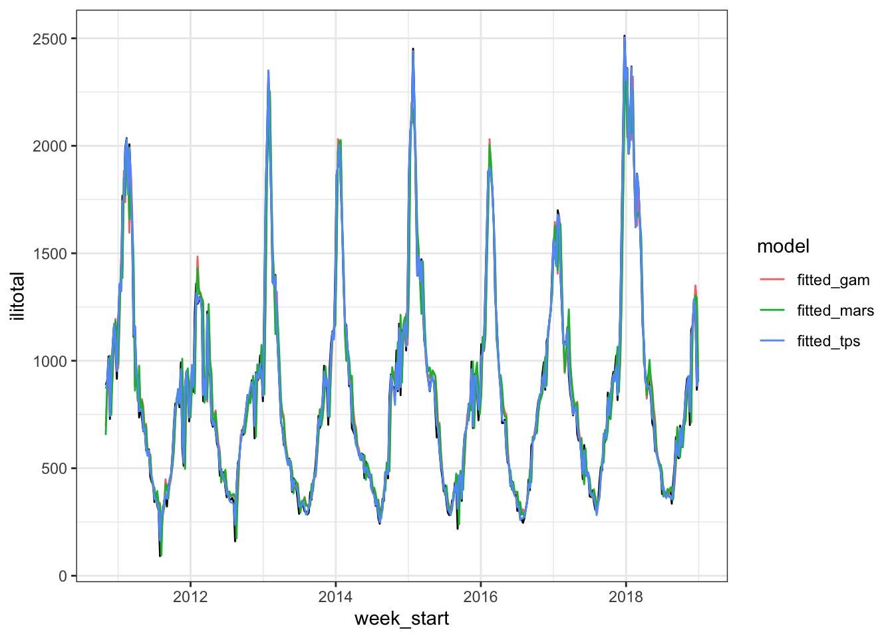
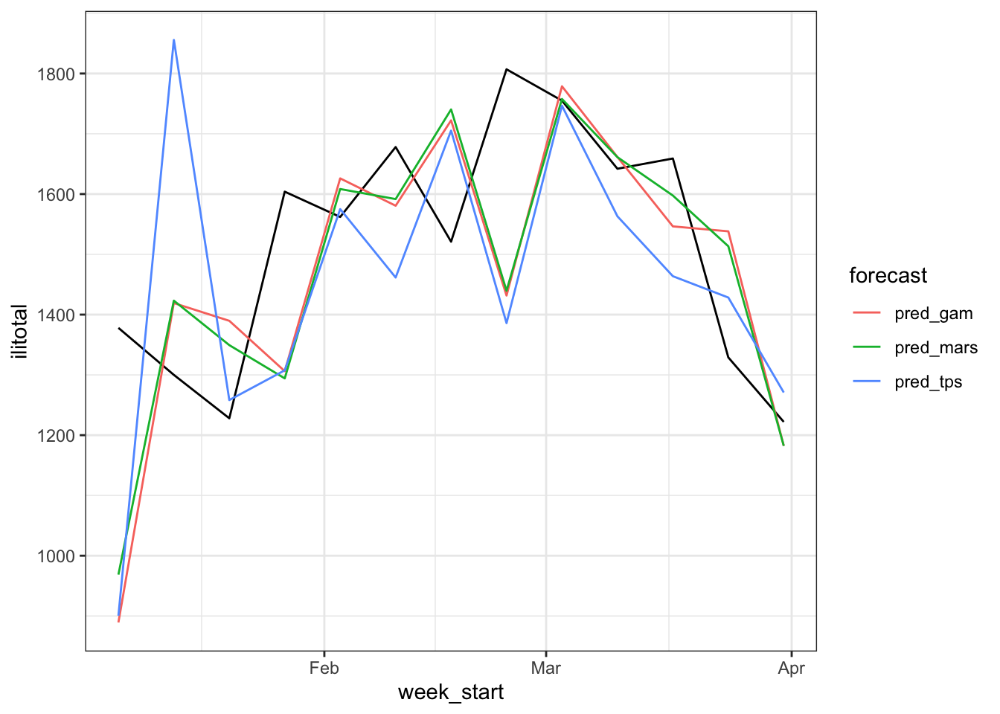
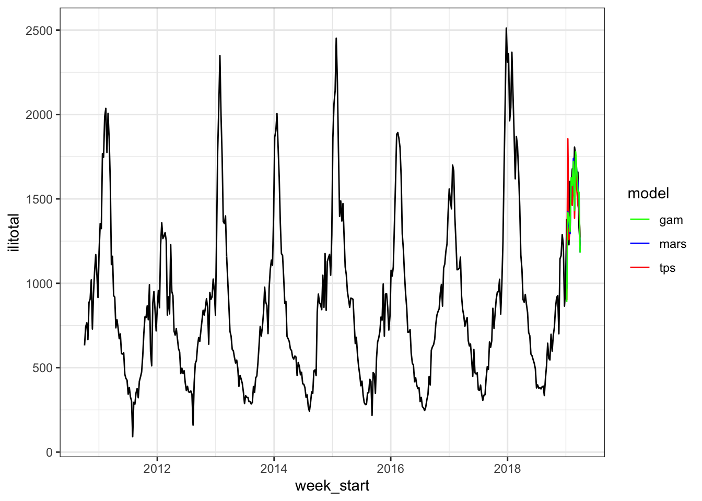

library(tidyverse)
library(fields)
library(earth)
library(mgcv)
library(forecast)3 Time Series with Spline Based Models
Disclaimer: The original source of the following contents is here
3.1 Setup
theme_set(theme_bw())
flu <- read_csv("https://raw.githubusercontent.com/asbates/nonlinear-models/master/data/ilinet-calif-up-to-2019-03-31.csv") %>%
mutate(t = 1:nrow(.))
flu# A tibble: 444 × 8
week_start year week unweighted_ili ilitotal num_of_providers
<date> <dbl> <dbl> <dbl> <dbl> <dbl>
1 2010-10-03 2010 40 1.95 632 112
2 2010-10-10 2010 41 2.15 742 122
3 2010-10-17 2010 42 2.24 766 126
4 2010-10-24 2010 43 1.92 666 130
5 2010-10-31 2010 44 2.52 887 131
6 2010-11-07 2010 45 2.75 906 126
7 2010-11-14 2010 46 2.82 1020 131
8 2010-11-21 2010 47 3.16 729 134
9 2010-11-28 2010 48 2.61 939 135
10 2010-12-05 2010 49 3.06 1072 135
# ℹ 434 more rows
# ℹ 2 more variables: total_patients <dbl>, t <int>flu %>%
ggplot(aes(week_start, ilitotal)) +
geom_line()
Three spline based models will be explored here
- Thin plate splines (TPS)
- Multivariate Additive Regression Splines (MARS)
- Generalized Additive Models (GAM)
for modeling the time series data.
flu_train <- flu %>% filter(week_start < "2019-01-01")
flu_test <- flu %>% filter(week_start >= "2019-01-01")
flu_ts <- ts(flu$ilitotal, frequency = 52)
flu_ts_train <- flu_ts[1:nrow(flu_train)]
flu_ts_test <- flu_ts[(nrow(flu_train) + 1):nrow(flu)]
# TPS requires X, Y splitted
x_train <- flu_train %>% select(t)
y_train <- flu_train %>% select(ilitotal)
x_test <- flu_test %>% select(t)
y_test <- flu_test %>% select(ilitotal)3.2 First Approach
Here we will model ilitotal by considering the time index t as the predictor.
# ARIMA
arima_mod <- auto.arima(flu_ts_train)
# thin plate spline
tps_mod <- Tps(x_train, y_train)
# MARS
mars_mod <- earth(ilitotal ~ t, data = flu_train)
# GAM
gam_mod <- gam(ilitotal ~ s(t), data = flu_train, method = "REML")flu_train %>%
mutate(
fitted_arima = fitted(arima_mod),
fitted_tps = fitted(tps_mod)[, 1],
fitted_mars = fitted(mars_mod)[, 1],
fitted_gam = fitted(gam_mod)
) -> flu_train_fittedflu_train_fitted %>%
select(week_start, ilitotal, starts_with("fitted")) %>%
pivot_longer(cols = starts_with("fitted"), names_to = "model", values_to = "value") %>%
mutate(
model = str_remove(model, "fitted_")
) %>%
ggplot(aes(week_start, ilitotal)) +
geom_line() +
geom_line(aes(y = value, color = model))
MARSandGAMare performing very poorly.
flu_test %>%
mutate(
pred_arima = forecast(arima_mod, h = 13)$mean[1:13],
pred_tps = predict(tps_mod, x_test)[, 1]
) -> flu_test_fittedflu_test_fitted %>%
select(week_start, ilitotal, starts_with("pred")) %>%
pivot_longer(cols = starts_with("pred"), names_to = "forecast", values_to = "value") %>%
mutate(
model = str_remove(forecast, "pred_")
) %>%
ggplot(aes(week_start, ilitotal)) +
geom_line() +
geom_line(aes(y = value, color = forecast))
flu %>%
ggplot(aes(week_start, ilitotal)) +
geom_line() +
geom_line(aes(week_start, pred_arima, color = "arima"), data = flu_test_fitted) +
geom_line(aes(week_start, pred_tps, color = "tps"), data = flu_test_fitted) +
scale_color_manual(
values = c("arima" = "blue", "tps" = "red"), name = "model"
)
ARIMAandTPSare performing very poorly too.
3.3 Second Approach
Here week and year will be used as the predictor instead of t
x_train <- flu_train %>% select(year, week)
x_test <- flu_test %>% select(year, week)# thin plate spline
tps_mod <- Tps(x_train, y_train)
# MARS
mars_mod <- earth(ilitotal ~ year + week, data = flu_train)
# GAM
gam_mod <- gam(ilitotal ~ s(year) + s(week), data = flu_train, method = "REML")flu_train %>%
mutate(
fitted_tps = fitted(tps_mod)[, 1],
fitted_mars = fitted(mars_mod)[, 1],
fitted_gam = fitted(gam_mod)
) -> flu_train_fittedflu_train_fitted %>%
select(week_start, ilitotal, starts_with("fitted")) %>%
pivot_longer(cols = starts_with("fitted"), names_to = "model", values_to = "value") %>%
ggplot(aes(week_start, ilitotal)) +
geom_line() +
geom_line(aes(y = value, color = model))
flu_test %>%
mutate(
pred_tps = predict(tps_mod, x_test)[, 1],
pred_mars = predict(mars_mod, x_test)[, 1],
pred_gam = predict(gam_mod, newdata = flu_test)
) -> flu_test_fittedflu_test_fitted %>%
select(week_start, ilitotal, starts_with("pred")) %>%
pivot_longer(cols = starts_with("pred"), names_to = "forecast", values_to = "value") %>%
ggplot(aes(week_start, ilitotal)) +
geom_line() +
geom_line(aes(y = value, color = forecast))
flu %>%
ggplot(aes(week_start, ilitotal)) +
geom_line() +
geom_line(aes(week_start, pred_tps, color = "tps"), data = flu_test_fitted) +
geom_line(aes(week_start, pred_mars, color = "mars"), data = flu_test_fitted) +
geom_line(aes(week_start, pred_gam, color = "gam"), data = flu_test_fitted) +
scale_color_manual(
values = c("mars" = "blue", "tps" = "red", "gam" = "green"), name = "model"
)
TPSis still doing better compared to theGAMandMARS.
3.4 Third Approach
Here four lags of the ilitotal will be used as the predictors.
flu %>%
mutate(
lag_ilitotal = lag(ilitotal),
lag2_ilitotal = lag(ilitotal, n = 2L),
lag3_ilitotal = lag(ilitotal, n = 3L),
lag4_ilitotal = lag(ilitotal, n = 4L),
) -> lagged_flu
lagged_flu# A tibble: 444 × 12
week_start year week unweighted_ili ilitotal num_of_providers
<date> <dbl> <dbl> <dbl> <dbl> <dbl>
1 2010-10-03 2010 40 1.95 632 112
2 2010-10-10 2010 41 2.15 742 122
3 2010-10-17 2010 42 2.24 766 126
4 2010-10-24 2010 43 1.92 666 130
5 2010-10-31 2010 44 2.52 887 131
6 2010-11-07 2010 45 2.75 906 126
7 2010-11-14 2010 46 2.82 1020 131
8 2010-11-21 2010 47 3.16 729 134
9 2010-11-28 2010 48 2.61 939 135
10 2010-12-05 2010 49 3.06 1072 135
# ℹ 434 more rows
# ℹ 6 more variables: total_patients <dbl>, t <int>, lag_ilitotal <dbl>,
# lag2_ilitotal <dbl>, lag3_ilitotal <dbl>, lag4_ilitotal <dbl># TPS can't handle NA
flu_train <- lagged_flu %>%
filter(week_start < "2019-01-01" & !is.na(lag4_ilitotal))
flu_test <- lagged_flu %>% filter(week_start >= "2019-01-01")
# TPS requires X, Y splited
x_train <- flu_train %>% select(starts_with("lag"))
y_train <- flu_train %>% select(ilitotal)
x_test <- flu_test %>% select(starts_with("lag"))
y_test <- flu_test %>% select(ilitotal)tps_mod <- Tps(x_train, y_train)
mars_mod <- earth(ilitotal ~ lag_ilitotal + lag2_ilitotal +
lag3_ilitotal + lag4_ilitotal, data = flu_train)
gam_mod <- gam(
ilitotal ~ s(lag_ilitotal) + s(lag2_ilitotal) + s(lag3_ilitotal) + s(lag4_ilitotal),
method = "REML",
data = flu_train
)flu_train %>%
mutate(
fitted_tps = fitted(tps_mod)[, 1],
fitted_mars = fitted(mars_mod)[, 1],
fitted_gam = fitted(gam_mod)
) -> flu_train_fittedflu_train_fitted %>%
select(week_start, ilitotal, starts_with("fitted")) %>%
pivot_longer(cols = starts_with("fitted"), names_to = "model", values_to = "value") %>%
ggplot(aes(week_start, ilitotal)) +
geom_line() +
geom_line(aes(y = value, color = model))
flu_test %>%
mutate(
pred_tps = predict(tps_mod, x_test)[, 1],
pred_mars = predict(mars_mod, x_test)[, 1],
pred_gam = predict(gam_mod, newdata = flu_test)
) -> flu_test_fittedflu_test_fitted %>%
select(week_start, ilitotal, starts_with("pred")) %>%
pivot_longer(cols = starts_with("pred"), names_to = "forecast", values_to = "value") %>%
ggplot(aes(week_start, ilitotal)) +
geom_line() +
geom_line(aes(y = value, color = forecast))
flu %>%
ggplot(aes(week_start, ilitotal)) +
geom_line() +
geom_line(aes(week_start, pred_tps, color = "tps"), data = flu_test_fitted) +
geom_line(aes(week_start, pred_mars, color = "mars"), data = flu_test_fitted) +
geom_line(aes(week_start, pred_gam, color = "gam"), data = flu_test_fitted) +
scale_color_manual(
values = c("mars" = "blue", "tps" = "red", "gam" = "green"), name = "model"
)
yardstick::metrics(flu_test_fitted, truth = ilitotal, estimate = pred_tps)# A tibble: 3 × 3
.metric .estimator .estimate
<chr> <chr> <dbl>
1 rmse standard 269.
2 rsq standard 0.0759
3 mae standard 202. yardstick::metrics(flu_test_fitted, truth = ilitotal, estimate = pred_mars)# A tibble: 3 × 3
.metric .estimator .estimate
<chr> <chr> <dbl>
1 rmse standard 201.
2 rsq standard 0.306
3 mae standard 153. yardstick::metrics(flu_test_fitted, truth = ilitotal, estimate = pred_gam)# A tibble: 3 × 3
.metric .estimator .estimate
<chr> <chr> <dbl>
1 rmse standard 219.
2 rsq standard 0.258
3 mae standard 170. MARSis the winner in this case.